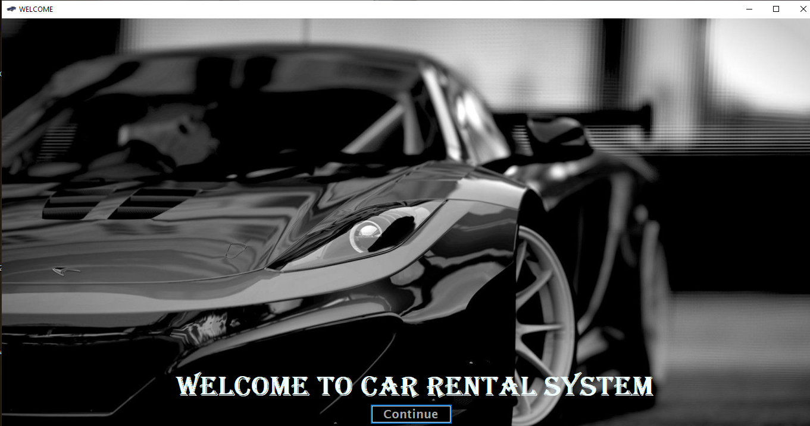
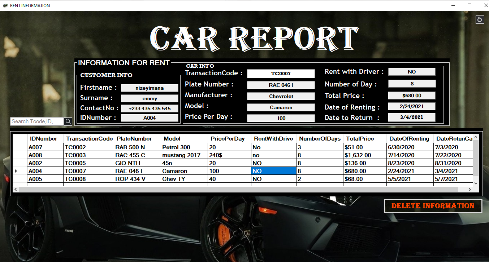

WHAT IS CRS?
This car rental system is desktop application for a company that rents out cars. This system enables the company to make their services more easly to
to control their cars and also keep records about their services, The project is designed to help people utilize transport effectively.
In recent times cars have become most convenient modes of transportation. Our Car rental system helps in making this an easier, hassle-free and enjoyable experience to acquire and use a car as per ones needs.

A person can book a car specifically for his travel time, co-travelers and the nature of travel. The rental system traverses from
designing a database to understanding business concept and above all to make this an easy to adapt system for various travelling
needs.
This picture shows the landing page of the system "Welcome page!" this project is designed in Visual Basic.Net on front-end
and for Back-end it use SQL sever management 2014.
WHY CRS?
Car Rental System has undetailed vital to both part company and customer in nowadays it one of the growing part in economy.
Car renting and sharing are often seen as a better, smarter and environment-friendly way of car ownership.
As more and more people gives up car ownership,
most of existing vehicular traffic and transportation challenges such as traffic congestion, pollution levels etc will plummet.
The scope of this project is as follows:
1.To keep detail records of both the cars and the customers, the duration they rent car as well as the type of car they rent.
2.The system will be mainly design for small a company that renders it car rental services to customers.
3.The system will have the ability to generate and print invoice for each successful transaction.
HOW THE SYSTEM WORK?
First this Car Rental System has Two levels of access: administration and customer
User has to be registed to use the system first of all, if it's the first time s/he must create the account and get the code Number,
credentials used to registe can be used to login on the system where will be directed in your account. Here user can update his/her information
like credential username and password etc... even the profile picture can be updated
After that user can enter to the pages contains available car in system where s/he can choose the car to rent in many cars, automaticaly
after the admin confirmation of the car rent this car removed from available list to unvailable car list. customer got the receipt contain
the date of car must be returned so, when the car is returned to the company Admin can update the car information from unvailable car list to available
car inorder to be used in renting again and again.
user after choosing car s/he confirm it by pressing the big button in upside of the page "BooK Now!" as it showned on the images the following
page after car confirmation is where customer choose to rent car with driver or NOT here also s/he enter the number of days
of carenting car where automatically the screen shows you the date to return a car.
then after pressing "Confirm" button user must wait a few second or s/he can communicate the admin to allow or denier the request
if the admin allows user to rent the car this current page it change where it asks user to Print the invoice receipt. which contains all information
on the process of this renting like customer fullnames, email, telephone number, date car is rented and date to return, the price per day and total price
and so other important information needed for both side company and custormer.
HOW THE SYSTEM WORK? Part2
First this Car Rental System has Two levels of access: administration and customer
User has to be registed to use the system first of all, if it's the first time s/he must create the account and get the code Number,
credentials used to registe can be used to login on the system where will be directed in your account. Here user can update his/her information
like credential username and password etc... even the profile picture can be updated
After that user can enter to the pages contains available car in system where s/he can choose the car to rent in many cars, automaticaly
after the admin confirmation of the car rent this car removed from available list to unvailable car list. customer got the receipt contain
the date of car must be returned so, when the car is returned to the company Admin can update the car information from unvailable car list to available
car inorder to be used in renting again and again.
user after choosing car s/he confirm it by pressing the big button in upside of the page "BooK Now!" as it showned on the images the following
page after car confirmation is where customer choose to rent car with driver or NOT here also s/he enter the number of days
of carenting car where automatically the screen shows you the date to return a car.
then after pressing "Confirm" button user must wait a few second or s/he can communicate the admin to allow or denier the request
if the admin allows user to rent the car this current page it change where it asks user to Print the invoice receipt. which contains all information
on the process of this renting like customer fullnames, email, telephone number, date car is rented and date to return, the price per day and total price
and so other important information needed for both side company and custormer.
CONCLUSION.
Based on the research done, some car rental companies still use desktop application for their car rental services and thus making
it to be limited to so many important feature that are not available unlike in the web based application where there are so many
feature available. Also some upcoming companies do not only make use of these desktop applications,
but also make use of phone call reservation, which is still lacking so many features that are needed for this type of system.
First this Car Rental System has Two levels of access: administration and customer
User has to be registed to use the system first of all, if it's the first time s/he must create the account and get the code Number,
credentials used to registe can be used to login on the system where will be directed in your account. Here user can update his/her information
like credential username and password etc... even the profile picture can be updated

After that user can enter to the pages contains available car in system where s/he can choose the car to rent in many cars, automaticaly
after the admin confirmation of the car rent this car removed from available list to unvailable car list. customer got the receipt contain
the date of car must be returned so, when the car is returned to the company Admin can update the car information from unvailable car list to available
car inorder to be used in renting again and again.
user after choosing car s/he confirm it by pressing the big button in upside of the page "BooK Now!" as it showned on the images the following
page after car confirmation is where customer choose to rent car with driver or NOT here also s/he enter the number of days
of carenting car where automatically the screen shows you the date to return a car.
then after pressing "Confirm" button user must wait a few second or s/he can communicate the admin to allow or denier the request
if the admin allows user to rent the car this current page it change where it asks user to Print the invoice receipt. which contains all information
on the process of this renting like customer fullnames, email, telephone number, date car is rented and date to return, the price per day and total price
and so other important information needed for both side company and custormer.